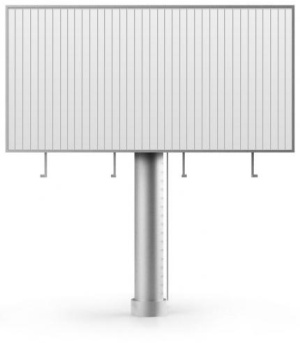

Реклама на Призматронах
Призматрон (Prismatron) — рекламоноситель, визуальная поверхность которого, благодаря тому, что состоит из трёхгранных поворачивающихся призм, может изменяться. Через заданный промежуток времени призмы поворачиваются вокруг своей оси, демонстрируя по очереди каждую из трёх граней. Таким образом, одновременно на них можно разместить три разных сюжета. Подобные рекламоносители устанавливаются на билборды, реже на конструкции типа суперсайт и пиллар, также иногда устанавливаются на фасады домов, заменяя брандмауэры в наиболее людных местах. Кроме того, иногда используются в Indoor-рекламе.
Призматроны комплектуются подсветкой, что обеспечивает их рекламную работу в любое время суток. Стандартные призматроны (3м х 6м) обычно располагаются на магистралях, вблизи станций метро и популярных городских объектов, небольшие призматроны (0,6м х 0,6м) используются во внутренней рекламе (в супермаркетах, ресторанах, офисах и т.д.).
Существуют разные конструкции призматронов, но по принципу обслуживания их можно разделить на две группы:
- призматроны с разборными призмами. В конструкциях подобного типа грани призм представляют собой отсоединяющиеся элементы — ламели. При поклейке рекламы на конструкциях подобного типа достаточно снимать одну плоскость из трёх имеющихся;
- призматроны с неразборными призмами. На данных конструкциях для монтажа рекламы необходимо снимать призмы целиком.
Основные преимущества "призм" как динамических рекламных установок
Появление призматронов вызвано и развитием современных технологий, и, в большей степени, тем, что бурное развитие рынка наружной рекламы повлекло за собой возникновение дефицита мест под размещение рекламных установок. Призматрон фактически экономит место, заменяя собой сразу три рекламных конструкции. Его можно установить в наиболее популярных, посещаемых местах города, в том случае, когда нельзя установить несколько рекламных щитов. Современные и высокоэффективные призматроны приходят на смену устаревшим конструкциям, снижая рекламную нагрузку на архитектурную среду города.
- Сменяемое изображение привлекает дополнительное внимание людей, наблюдающих за процессом смены изображения, которая в определенной степени таинственна и непредсказуема. Люди ждут, когда появится следующее изображение, что на нем будет. Сам процесс смены изображений достаточно занимателен.;
- Контраст между содержанием трех изображений еще более усиливает воздействие рекламы;
- С помощью призматрона можно существенно увеличивать рекламную эффективность, располагая на каждой из поверхности продолжение истории одного и того же продукта. Таким образом при поворачивании поверхностей получается мини-рекламная кампания.
Выбрать призматроны на карте города
По вопросам размещения звоните +7 (3412) 333-000